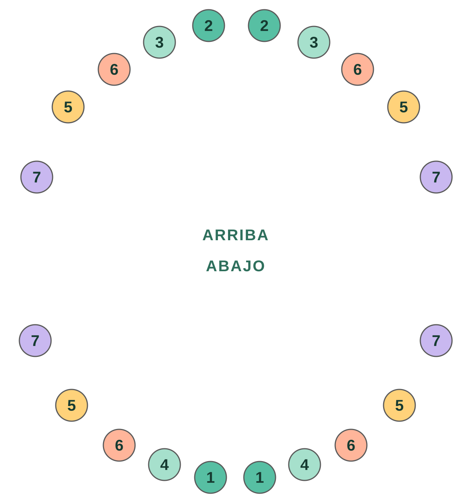
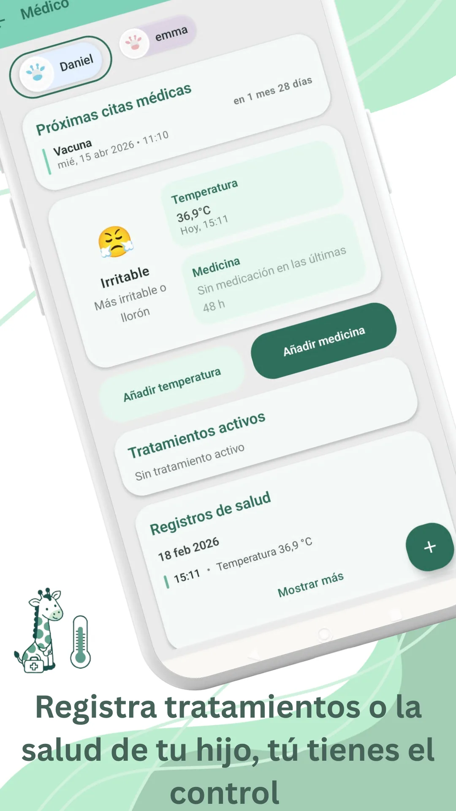

En esta página · 9 secciones
En pocas palabras
La mayoría de los bebés tienen su primer diente hacia los 6 meses, aunque lo habitual es que salga entre los 4 y los 12 meses, y a algunos bebés sanos les sale algo más tarde. Suelen empezar los incisivos centrales de abajo, y los 20 dientes de leche están completos hacia los 2-3 años. Muchos bebés no siguen el orden de las tablas, y casi siempre no pasa nada. Consulta si a los 18 meses no ha salido ninguno.
- Primer diente
- ~6 meseshabitual entre 4 y 12 meses
- Suelen salir primero
- Incisivoscentrales de abajo
- Dientes de leche
- 20completos hacia los 2-3 años
- Consulta si
- 18 mesessin ningún diente
Cuándo sale el primer diente
El primer diente suele aparecer alrededor de los 6 meses. Pero "alrededor" aquí es amplio: hay bebés que lo tienen a los 4 meses y otros que llegan al año o poco más sin ningún diente, y los dos casos son normales. Influye mucho la genética: si a ti o a tu pareja os salieron tarde, es probable que a tu bebé también.
Que los dientes salgan antes o después no dice nada de cómo se está desarrollando tu bebé ni de lo sanos que serán sus dientes.
En qué orden suelen salir
Los libros describen este orden habitual, por parejas:

| Dientes | Edad aproximada |
|---|---|
| 1Incisivos centrales de abajo | 6-10 meses |
| 2Incisivos centrales de arriba | 8-12 meses |
| 34Incisivos laterales (arriba y abajo) | 9-16 meses |
| 5Primeros molares | 13-19 meses |
| 6Caninos (colmillos) | 16-23 meses |
| 7Segundos molares | 23-33 meses |
Cuando el orden no es el de los libros
Esta tabla es un promedio de muchos niños, no un calendario que tu bebé deba cumplir. En la práctica, muchos niños eligen su propio orden: salen antes los de arriba, aparece un colmillo antes que los laterales, o una muela se adelanta. Cuando pasa, es fácil preocuparse. Casi siempre no significa nada.
Lo vivimos de cerca: a un bebé de nuestra familia le salieron primero las muelas de abajo, y los incisivos laterales no aparecieron hasta mes y medio después. Durante esas semanas el hueco llamaba la atención y daba que pensar. Al final salieron sin más, y no pasó nada.
Lo que sí merece una consulta no es el orden, sino que pase mucho tiempo sin ningún diente o que algo no te cuadre. Te lo contamos más abajo.
Apunta cuándo asoma cada diente
Guárdalo en el diario de Raffy junto a sus tomas, su sueño y su crecimiento, y tenlo a mano en la próxima revisión.

Síntomas de la dentición
Algunos bebés echan los dientes sin que nadie lo note; otros lo pasan peor. En los días antes de que asome un diente es frecuente que:
- Babee más de lo normal y se le irrite la piel de la barbilla.
- Se lleve todo a la boca y quiera morder.
- Tenga la encía hinchada o enrojecida.
- Esté más irritable o duerma algo peor.
¿Los dientes dan fiebre? Siempre se ha dicho que sí, pero no es así. Cuando sale un diente, la temperatura puede subir unas décimas, sin llegar a ser fiebre. Si tu bebé tiene 38 °C o más, diarrea, vómitos o un catarro, no lo atribuyas a la dentición y consulta como harías en cualquier otro momento.
¿Y el culito irritado? Es otra creencia muy extendida, pero no hay pruebas de que los dientes lo causen. La irritación del pañal suele deberse a la humedad, al roce o a un cambio en las cacas, y se trata como cualquier otra vez.
Cómo aliviar las molestias
- Masajea su encía con un dedo limpio durante un par de minutos.
- Dale un mordedor firme y frío de la nevera, nunca del congelador: el frío extremo puede dañar la encía.
- Sécale la baba a menudo con un paño suave para evitar irritaciones.
- Si ya come sólidos, algo frío y blando (como una fruta fría chafada) puede calmarle, siempre vigilado.
- Si le duele mucho, pregunta a tu pediatra si puede tomar paracetamol y en qué dosis según su peso.
Qué evitar
- Collares y pulseras de ámbar o de dentición: no hay pruebas de que alivien, y la FDA y la AAP alertan de riesgo de asfixia y estrangulamiento.
- Geles o cremas con benzocaína o lidocaína: la FDA (la agencia de medicamentos de EE. UU.) desaconseja su uso en la dentición: aportan poco o ningún beneficio y pueden causar problemas graves, como una alteración de la sangre que reduce el oxígeno (metahemoglobinemia).
- Pastillas o geles "homeopáticos" para la dentición: no hay pruebas de que funcionen y pueden contener sustancias dañinas.
- Mojar el chupete o el mordedor en azúcar, miel o licores. La miel, además, no se debe dar antes del año por el riesgo de botulismo.
Seguridad pediátrica: cuándo consultar al pediatra
- A los 18 meses no le ha salido ningún diente.
- Tiene fiebre de 38 °C o más, diarrea o vómitos: no lo atribuyas a los dientes. Si tiene menos de 3 meses y llega a 38 °C, llama ya.
- Rechaza comer o beber, o moja muchos menos pañales de lo normal.
- Un diente sale roto, con manchas o de un color raro, o nace con algún diente.
- Hay algo que no te cuadra, aunque no esté en esta lista.
Este artículo es educativo y no sustituye la valoración de tu pediatra.
Preguntas frecuentes
¿Es normal que mi bebé no tenga dientes al año?
Sí. Hay bebés sanos a los que el primer diente les sale después del año. Coméntalo en la revisión, y consulta si a los 18 meses no ha salido ninguno.
¿Es normal que le salgan antes las muelas que los incisivos?
Puede pasar y casi siempre no tiene importancia. El orden de las tablas es una media; muchos niños siguen el suyo y los dientes que faltan acaban saliendo semanas o meses después.
¿Los dientes dan fiebre?
Pueden subir unas décimas la temperatura, pero no causan fiebre de 38 °C o más. Si la tiene, busca otra causa con tu pediatra.
¿Cuánto duran las molestias de cada diente?
Suelen notarse unos días antes y durante la salida del diente, y después se pasan.
¿Cuándo empiezo a lavarle los dientes?
Desde el primer diente, dos veces al día, con un cepillo infantil y una cantidad de pasta con flúor del tamaño de un grano de arroz.
Fuentes
- Asociación Española de Pediatría · En FamiliaLe están saliendo los dientes a mi bebé
- American Academy of Pediatrics · HealthyChildren.orgTeething: 4 to 7 months (en inglés)
- American Dental Association · MouthHealthyBaby teeth (en inglés)
- American Dental Association · MouthHealthyPrimary tooth development: tabla de edades de erupción (PDF, en inglés)
- FDASafely soothing teething pain in infants and children (en inglés)
- NHS (Reino Unido)Baby teething symptoms (en inglés)
Revisamos este artículo con estas fuentes el 11 nov 2026. Es contenido educativo, no consejo médico. Política editorial